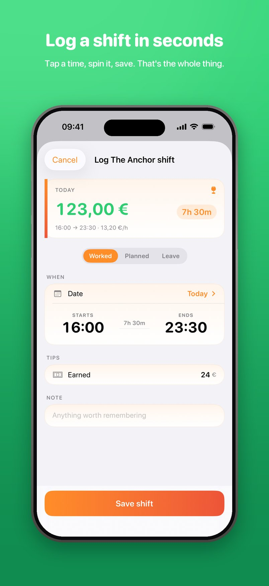
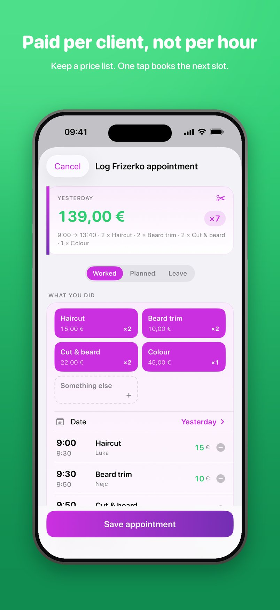
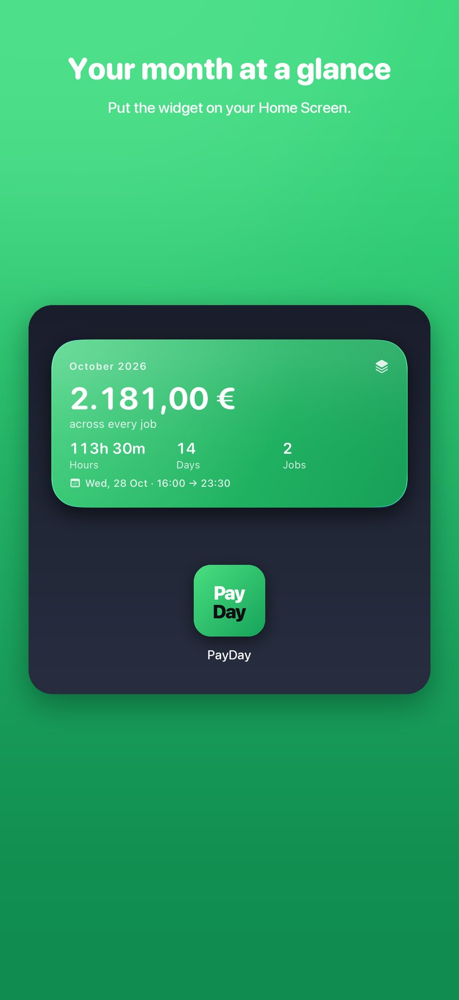

PayDay
Beleženje izmen in zaslužka za vse, ki delajo več kot eno službo. Vpiši izmene in napitnine in vedno vedi, koliko bo izplačilo ta mesec.
Poznaj svojo plačo pred plačilnim dnem
Večina aplikacij za beleženje ur predvideva enega delodajalca in fiksno plačo. PayDay predvideva ravno nasprotno: bar ob vikendih, studio ob torkih, dostave, ko se pojavijo, vsaka s svojo postavko, urami in napitninami. Odgovori na tri vprašanja. Koliko sem delal ta mesec? Koliko mi bo mesec prinesel? In ali se plačilna lista res ujema?
Niso vsi plačani na uro. Frizerji, brivci, manikerke, maserji, inštruktorji in učitelji vožnje lahko službo nastavijo na plačilo po terminu, namesto urne postavke vodijo cenik in dobijo evidenco, ki pokaže vsak dan z njegovimi termini.
Posnetki zaslona





Funkcije
- Zavihek za vsako službo, s svojo postavko, barvo in ikono
- Plačan po terminu? Vodi cenik in stranko vpiši z enim dotikom
- Pripravljeni ceniki za frizerje, brivce, nohte, masažo in drugo
- Prosti dnevi: dopust, bolniška ali drugo, plačano ali neplačano
- Mesečni stroški, kot je davek, da kartica pokaže, koliko ti mesec v resnici pusti
- Izmeno vpišeš v nekaj sekundah ali z dotikom ponoviš zadnjo
- Dva običajna časa za vsako službo, vsak z enim dotikom
- Načrtuj izmene vnaprej po urniku, z opomnikom, da jih potrdiš
- Opozori te, ko se dve izmeni prekrivata
- Izmene, ki trajajo čez polnoč
- Napitnine, samo pri službah, ki jih imajo
- Napoved plače za mesec: opravljeno, načrtovano in ocena, jasno ločeno
- Izberi številke na vsaki kartici: pridrži jo in izberi med osmimi
- Mesečni cilji v urah ali denarju ter letni seštevek z neobvezno mejo
- Pika na koledarju za vsak dan z opombo
- Preveri plačilno listo: vpiši, kaj je bilo izplačano, in vidi razliko
- Povišica? Izberi, ali velja tudi za že vpisane izmene
- Evidence za delodajalca v PDF-ju in vsi podatki v CSV-ju
- Primerjaj ure in zaslužek med službami, mesec za mesecem
- V slovenščini, angleščini, nemščini in italijanščini, preklop v aplikaciji
- Katerakoli valuta, svetla in temna tema
- Sinhronizacija med napravami prek iCloud ali vse samo na telefonu
Kako deluje
Kratek ogled ti pokaže aplikacijo, nato dodaš prvo službo in izbereš, ali je plačana na uro ali po terminu. Vsako izmeno vpiši, ko jo opraviš, ali pa urnik vpiši vnaprej kot načrtovane izmene in PayDay te po vsaki vpraša, ali si jo delal. Napoved meseca loči opravljeno, načrtovano in oceno ter preostale dni zapolni s tvojim povprečjem, brez dni, ki si jih vpisal kot proste. Ko pride plačilo, vpiši izplačani znesek in PayDay ti pove, ali se ujema s tem, kar so prinesle tvoje izmene.
Zahteve
- iPhone z iOS 17 ali novejšim
- Brezplačen prenos
- iCloud, samo če želiš sinhronizacijo med napravami
- Brez računa in brez registracije
Ocene in mnenja
-
Great app for tracking working hours
Great app! Very easy to use and well organized. Tracking my working hours is very simple and convenient. I definitely recommend it!!
Mnenja so v izvirnem jeziku, tako kot so bila napisana v App Storu.